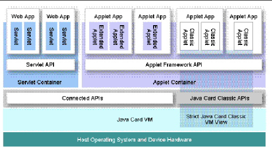

| C H A P T E R 1 |
|
Introduction |
The Java Card 3 Platform, Version 3.0.2 consists of two editions, the Classic Edition and the Connected Edition.
This document applies to the Connected Edition. References to components, such as the Java Card runtime environment (RE), refer to the component as it exists in the Connected Edition. However, the development kit for the Connected Edition, and the NetBeans IDE can be used to create classic applets that will also run on the Classic Edition RE.
The Java Card development kit ships in binary-only bundles or bundles with both binary and source versions of the kit. This document pertains to both binary and source bundles, except where noted. In addition, cryptography extensions are available in some bundles. Cryptography issues are described in this document.
This chapter contains the following sections:
The Connected Edition contains a new architecture that enables developers to integrate smart cards within IP networks and web services architectures and features an enhanced runtime environment and virtual machine, with network-oriented features that support web applications. The Connected Edition supports both a web application model and an applet application model. The applet application model supports two types of applet applications - legacy applets and extended applets. Extended applets leverage the Connected Edition features while continuing to use the APDU communication model.
Java Card 3 Platform, Connected Edition technology provides high-end smart cards with improved connectivity and integration into all-IP networks. A high-end, Java Card 3 technology-enabled smart card can act as a secure network node, capable of providing security services to the network or requesting access to network resources. It also allows for the convergence of smart-card services by handling multiple, concurrent communications through contact interfaces, using IP or ISO 7816-4 protocols, and through contactless interfaces, using the ISO 14443 protocol.
The high-level architecture of the Java Card 3 Platform, Connected Edition is illustrated in FIGURE 1-1. Notice the classic APIs in a Connected Edition are built on smart cards that implement a view of the strict, classic Java Card VM, which supports only classic applet applications. However, the Connected Edition Java Card VM also supports extended applets and servlets, which are for web applications.
FIGURE 1-1 Architecture of Connected Edition

The development kit ships with a default Java Card RE that simulates a Java Card Platform, Connected Edition as it would be implemented onto a smart card. The default Java Card RE is the reference implementation (RI), and is invoked on the command line with cjcre.exe. The RI implements the ISO 7816-4:2005 specification, including support for up to twenty logical channels, as well as the extended APDU extensions as defined in ISO 7816-3.
The RI was designed to simulate a dual T=1 contacted and T=CL contactless concurrent interface implementation of the Java Card runtime environment, with the capability to operate on both interfaces simultaneously. The RI source code can be built and configured to support all the ISO 7816-3 and ISO 14443-4 smart card protocols, including T=0 single interface, T=1 single interface, T=CL single contactless interface and T=1/T=CL dual concurrent interface.
This development kit describes how to use the command-line tools included in this bundle. It enables you to create applications that utilize the Connected Edition new network-oriented features, such as support for web applications, including the Java Servlet APIs, as well as applets with extended and advanced capabilities. Any valid application written for, or any valid implementation of, the Connected Edition may also use features found in the Classic Edition.
Servlet APIs, as well as applets with extended and advanced capabilities. Any valid application written for, or any valid implementation of, the Connected Edition may also use features found in the Classic Edition.
This development kit includes a suite of tools, a reference implementation, and the associated documentation for developers to use when developing Java Card technology-based applications (Java Card 3 platform applications), servlets, and extended applets for the Connected Edition. Developers can use the development kit tools to create applications that fully utilize the features of the Connected Edition.
Developers creating implementations or applications for the Connected Edition should be aware of the following features of the Connected Edition that represent key security and usability characteristics of Java Card technology-based smart cards and ensure the backward-compatibility and scalability of the platform:
Developers using the development kit to create applications for the Connected Edition should also be aware that the following features are exclusive to the Connected Edition:
The Connected Edition security model includes the following components and features:
The Connected Edition provides support for web applications, extended applets and legacy applet-based applications.
The Connected Edition provides support for typical web applications including servlets, filters, and listeners. The web application model is only available on implementations for the Connected Edition.
For developers, the extended applet application model of the Connected Edition provides a migration path for legacy, applet-based applications to the Connected Edition.
The development kit is delivered in executable Java archive (JAR) files. Each JAR file bundle includes the binaries of a Java Card virtual machine, APDU tool, compiler tool, converter tool, debugger tool, installer tool, normalizer tool, packager tool, ROMizer tool, and uninstaller tool for the development kit. The source bundles include the binaries, and also include the source files used to build the binaries.
The Connected Edition reference implementation is located in the bin directory with a program name of cjcre.exe. See Chapter 5 for detailed information about running the reference implementation from the command line.
Chapter 3 describes the sequence of development activities and the tool chain used in developing Java Card 3 applications.
The development kit bundle contains the following tools:
See Chapter 6 for information about using the Compiler tool.
See Chapter 7 for information about using the Packager tool.
See Chapter 8 for information about using the Installer tool as a stand-alone application.
See Chapter 10 for information about using the APDU tool.
See Chapter 9 for information about using the Normalizer tool.
See Chapter 9 for information about using the Converter tool.
See Chapter 11 for information about using the Debugger tool.
See Chapter 13 for detailed information about creating a ROM image file and building a custom cjcre.exe.
The Java Card 3 platform samples provide a demonstration of the features in the Connected Edition and source code that gives an introduction to Java Card 3 platform programming. See Chapter 4 for a description of the samples included with this development kit and where to find additional samples on http://kenai.com. The Connected Edition samples must be run from within the plugin provided with the NetBeans IDE, version 6.8, which is available for download from http://netbeans.org.
This release of the development kit executes on the Microsoft Windows XP SP2 operating system with an IDE of the developer’s choice. However, the NetBeans IDE is strongly recommended because without it, you cannot run the samples.
The following additional software is required by the development kit. See Chapter 2 for download and installation information.
| Note - MinGW is not required to run or to develop applications. |
) version 6 update 10 or higher (JDK version 1.6) is required.
The Java Card Technology Compatibility Kit (Java Card TCK) is a portable, configurable automated test suite for verifying the compliance of your implementation with the Java Card specification. To be in compliance, an implementation of the Java Card 3 platform, Connected Edition specification must pass the Java Card TCK 3.0.2 tests as described in Java Card Technology Compatibility Kit, Version 3.0.2 User’s Guide.
Copyright © 2009 Sun Microsystems, Inc. All rights reserved.